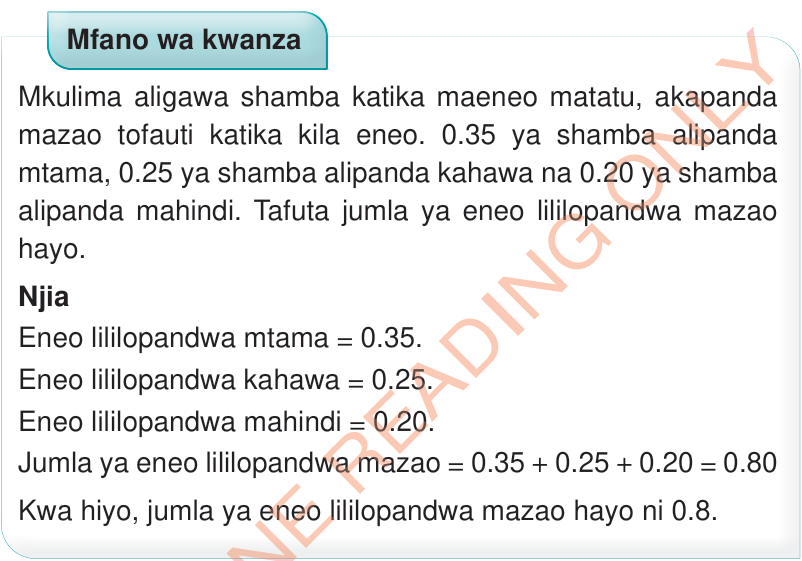
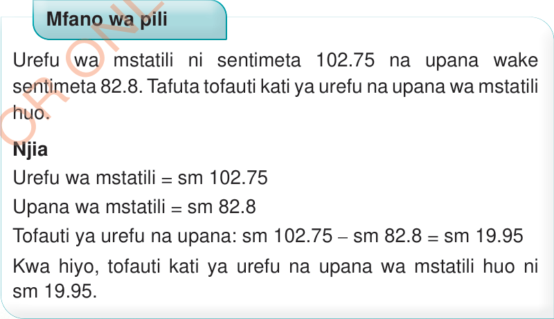

Mafumbo yenye dhana ya desimali
Namba za desimali zinaweza kutumika katika mazingira ambayo usahihi unahitajika zaidi katika shughuli za kila siku.
Mkulima aligawa shamba katika maeneo matatu, akapanda mazao tofauti katika kila eneo.
0.35 ya shamba alipanda mtama, 0.25 ya shamba alipanda kahawa na 0.20 ya shamba alipanda mahindi.
Tafuta jumla ya eneo lililopandwa mazao hayo.
Njia
Eneo lililopandwa mtama = 0.35.
Eneo lililopandwa kahawa = 0.25.
Eneo lililopandwa mahindi = 0.20.
Jumla ya eneo lililopandwa mazao = 0.35 + 0.25 + 0.20 = 0.80
Kwa hiyo, jumla ya eneo lililopandwa mazao hayo ni 0.8.

Urefu wa mstatili ni sentimeta 102.75 na upana wake sentimeta 82.8.
Tafuta tofauti kati ya urefu na upana wa mstatili huo.
Njia
Urefu wa mstatili = sm 102.75
Upana wa mstatili = sm 82.8
Tofauti ya urefu na upana: sm 102.75 – sm 82.8 = sm 19.95
Kwa hiyo, tofauti kati ya urefu na upana wa mstatili huo ni sm 19.95.
